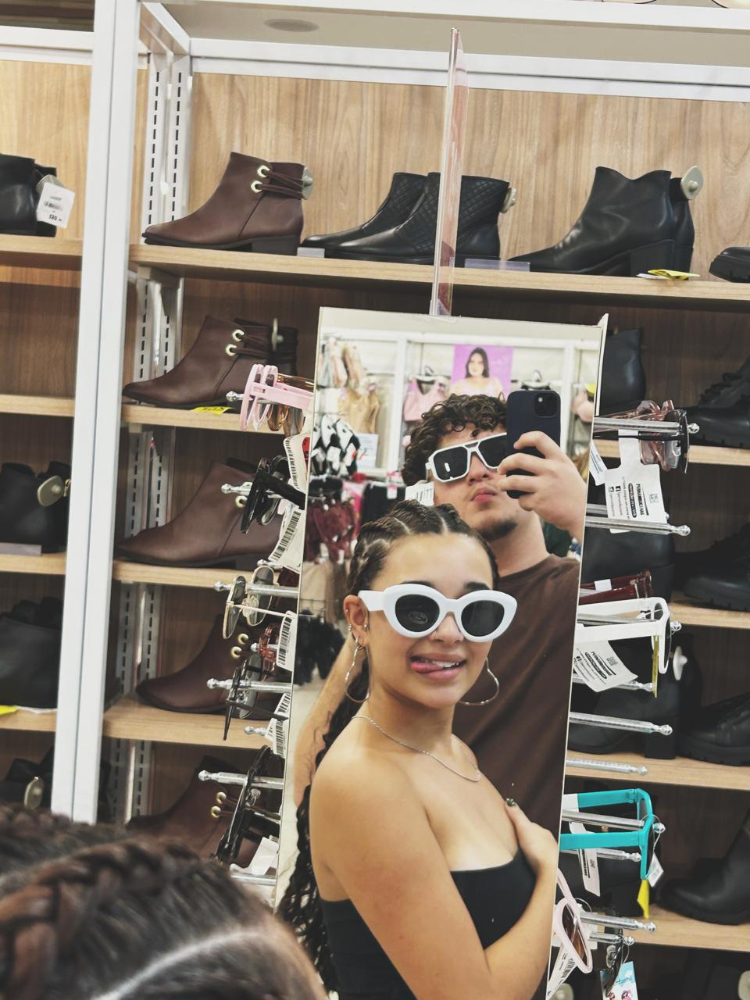
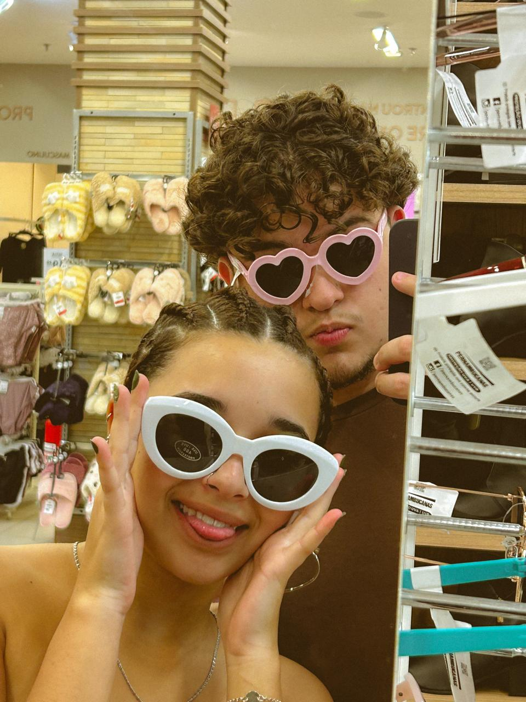

Acordar em uma quinta feira
Pensar se realmente vale apena levantar
Deitar de volta na cama
O marvado do Jezus vai dar prova em uma quinta feira

Arrumar uma desculpa para faltar
Acordar ás 13h
Assistir vídeos até dar vontade de levantar
E ir. Finalmente em casa
Desligar o celular para carregar
Rodar o centro inteiro e não comprar nada
trocar de roupa
tomar um banho depois
Sentar no chão